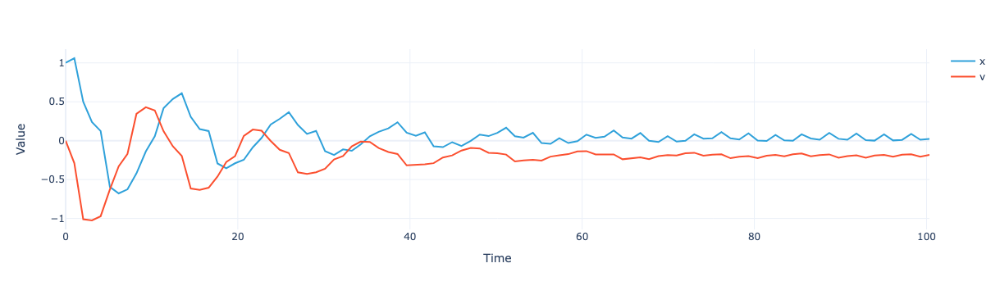
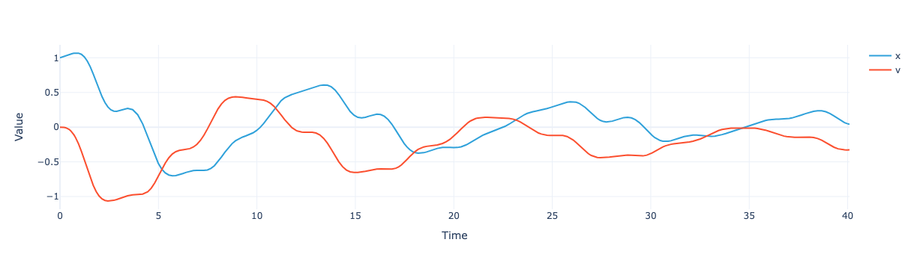

from xarray import Coordinates
from pymor.basic import RectDomain, ConstantFunction, ExpressionFunction, StationaryProblem, \
discretize_stationary_cg, thermal_block_problem, InstationaryProblem, discretize_instationary_cg, \
NumpyMatrixOperator, ExpressionParameterFunctional, Parameters, InstationaryModel, Mupymor.timestepping
Extended functionality for pyMOR time steppers
Imports
API
TimeStepper.solve
def solve(
initial_time, # The time at which to begin time-stepping.
end_time, # The time until which to perform time-stepping.
initial_data, # The solution vector at initial_timeinitial_time.
operator, # The |Operator| A.
rhs:NoneType=None, # The right-hand side F (either |VectorArray| of length 1 or |Operator| with
source.dim == 1source.dim == 1). If NoneNone, zero right-hand side is assumed.
mass:NoneType=None, # The |Operator| M. If NoneNone, the identity operator is assumed.
mu:NoneType=None, # |Parameter values| for which operatoroperator and rhsrhs are evaluated. The current
time is added to mumu with key tt.
num_values:NoneType=None, # The number of returned vectors of the solution trajectory. If NoneNone, each
intermediate vector that is calculated is returned.
):
Apply time-stepper to the equation.
The equation is of the form ::
M(mu) * d_t u + A(u, mu, t) = F(mu, t),
u(mu, t_0) = u_0(mu).init_progress_widget
def init_progress_widget(
initial_time, end_time
):
tick
def tick(
):
update_progress_widget
def update_progress_widget(
widget, tock, t, last_t
):
init_cvode
def init_cvode(
cvode_rhs, num_values
):
solve_cvode
def solve_cvode(
solver, t_list, initial_data
):
AdamsTimeStepper
def AdamsTimeStepper(
):
Interface for time-stepping algorithms.
Algorithms implementing this interface solve time-dependent initial value problems of the form ::
M(mu) * d_t u + A(u, mu, t) = F(mu, t),
u(mu, t_0) = u_0(mu).Time-steppers used by |InstationaryModel| have to fulfill this interface.
Example 2
dof = Coordinates({'dof': ('dof', ['x', 'v'], {'long_name': "Degrees of freedom"})})
space = XarrayVectorSpace(dof)
A = XarrayMatrixOperator(np.array([[0., -1.], [1., 0]]), source=space, range=space)
B = XarrayMatrixOperator(np.array([[0., 0.], [0., 1.]]), source=space, range=space)
operator = LincombOperator(
[A, B],
[
ExpressionParameterFunctional("w0**2", Parameters({'w0': 1})),
ExpressionParameterFunctional("c", Parameters({'c': 1}))
]
)
rhs = space.from_numpy(np.array([[.1], [0.]]))
initial_data = space.from_numpy(np.array([1., 0.]))
T = 100
model = InstationaryModel(T, initial_data, operator, rhs, time_stepper=AdamsTimeStepper(), num_values=100)
mu = dict(c=.1, w0="sin(t)")
mu = model.parameters.parse(mu)sol = model.solve(dict(c=.1, w0="sin(t+.001)"))sol.visualize()
Example 1
# domain = RectDomain([[0.,0.], [1.,1.]])
# diffusion = ConstantFunction(1, 2)
# rhs = ExpressionFunction('(sqrt( (x[0]-0.5)**2 + (x[1]-0.5)**2) <= 0.3) * 1.', 2)
# problem = StationaryProblem(
# domain=domain,
# diffusion=diffusion,
# rhs=rhs,
# )
# m, data = discretize_stationary_cg(problem, diameter=1)
# p = thermal_block_problem([2,2])
# m, _ = discretize_stationary_cg(p, diameter=1)
# pp = InstationaryProblem(p, initial_data=ConstantFunction(0., 2), T=1.)
# mm, _ = discretize_instationary_cg(pp, nt=10, diameter=1)
# mm = mm.with_(time_stepper=AdamsTimeStepper(), num_values=200, operator=mm.operator, mass=None, output_functional=None)
# mm.solve({'diffusion': [.5, .6, .7, .8]});
# def numpy_to_xarray(op):
# if isinstance(op, NumpyMatrixOperator): return XarrayMatrixOperator(op.matrix, source='elements', range='elements', name=op.name if op.name != 'NumpyMatrixOperator' else None)
# if isinstance(op, LincombOperator): return LincombOperator([numpy_to_xarray(o) for o in op.operators], op.coefficients, name=op.name)
# if isinstance(op, VectorOperator): return LincombOperator([numpy_to_xarray(o) for o in op.operators], op.coefficients, name=op.name)
# mm.operator
# range_space = numpy_to_xarray(mm.operator).range
# source_space = numpy_to_xarray(mm.operator).source
# mmm = mm.with_(
# T=mm.T,
# initial_data=source_space.from_numpy(mm.initial_data.array.to_numpy()),
# operator=numpy_to_xarray(mm.operator),
# rhs=range_space.from_numpy(mm.rhs.as_range_array().to_numpy()),
# mass=None,
# output_functional=None,
# time_stepper=AdamsTimeStepper()
# )
# mmm.solve({'diffusion': [.5, .6, .7, .8]})# #| export
# class BDFTimeStepper(TimeStepper):
# def __init__(self):
# # self.__auto_init(locals())
# pass
# def iterate(self, initial_time, end_time, initial_data, operator, rhs=None, mass=None, mu=None, num_values=None, solver_options=None):
# options = cvode_solver_options()['cvode_bdf']
# if solver_options:
# options.update(solver_options)
# progress = init_progress_widget(initial_time, end_time)
# tock = tick()
# last_t = 0
# def cvode_rhs(t, y, ydot):
# nonlocal tock, last_t
# tock = update_progress_widget(progress, tock, t, last_t)
# last_t = t
# np.copyto(ydot, (-operator.assemble(mu.at_time(t=t)).apply(operator.source.from_numpy(y)) + rhs.as_range_array(mu.at_time(t=t))).to_numpy().T[0])
# def preconditioner_setup(t, y, jok, jcurPtr, gamma, user_data):
# """Generate P and do ILU decomposition."""
# if jok:
# jcurPtr.value = False
# else:
# user_data['approximate_jacobian'] = -to_matrix(operator.assemble(mu.at_time(t=t)))
# if operator.solver_options is not None and 'inverse' in operator.solver_options:
# user_data['approximate_jacobian'] = restrict_bandwidth(
# user_data['approximate_jacobian'],
# operator.solver_options['inverse']['preconditioner_bandwidth']
# )
# jcurPtr.value = True
# # Scale jacobian by -gamma, add identity matrix and do LU decomposition
# p = -gamma*user_data['approximate_jacobian'] + sparse2d_identity(user_data['approximate_jacobian'].shape[0])
# if sps.issparse(p):
# p = p.tocsc()
# else:
# p = sps.csc_array(p)
# user_data['factored_preconditioner'] = spilu(p) # , permc_spec='NATURAL')
# return 0
# def preconditioner_solve(t, y, r, z, gamma, delta, lr, user_data):
# """ Solve the block-diagonal system Pz = r. """
# np.copyto(z, user_data['factored_preconditioner'].solve(r))
# return 0
# self._solver = cvode.CVODE(
# cvode_rhs,
# lmm_type='BDF',
# nonlinsolver='newton',
# linsolver='spgmr',
# precond_type='left',
# prec_setupfn=preconditioner_setup,
# prec_solvefn=preconditioner_solve,
# rtol=options['rtol'],
# atol=options['atol'],
# max_steps=options['max_steps'],
# user_data={}
# )
# t_list = np.linspace(initial_time, end_time, num_values)
# sol = self._solver.solve(t_list, initial_data.to_numpy().T[0])
# progress.close()
# if isinstance(operator.source, XarrayVectorSpace):
# return [operator.source.from_numpy(sol.values.y, extended_coord_data={'Time': t_list})]
# return ((operator.source.from_numpy(u), t) for u, t in zip(sol.values.y, t_list))BDFTimeStepper
def BDFTimeStepper(
):
Interface for time-stepping algorithms.
Algorithms implementing this interface solve time-dependent initial value problems of the form ::
M(mu) * d_t u + A(u, mu, t) = F(mu, t),
u(mu, t_0) = u_0(mu).Time-steppers used by |InstationaryModel| have to fulfill this interface.
Example 1
p = thermal_block_problem([2,2])
m, _ = discretize_stationary_cg(p)
pp = InstationaryProblem(p, initial_data=ConstantFunction(0., 2), T=1.)
mm, _ = discretize_instationary_cg(pp, nt=10)solver_options={'inverse': {'type': 'scipy_lgmres_spilu', 'preconditioner_bandwidth': 2}}mm = mm.with_(time_stepper=BDFTimeStepper(), num_values=200, operator=mm.operator)mm.solve({'diffusion': [.5, .6, .7, .8]})NumpyVectorArray(
NumpyVectorSpace(20201),
[[0.00000000e+00 0.00000000e+00 0.00000000e+00 ... 0.00000000e+00
0.00000000e+00 0.00000000e+00]
[0.00000000e+00 0.00000000e+00 0.00000000e+00 ... 0.00000000e+00
0.00000000e+00 0.00000000e+00]
[0.00000000e+00 0.00000000e+00 0.00000000e+00 ... 0.00000000e+00
0.00000000e+00 0.00000000e+00]
...
[0.00000000e+00 2.75757447e-10 2.03167753e-06 ... 1.81201470e-05
2.54533008e-05 3.17670706e-05]
[0.00000000e+00 2.75757447e-10 2.03080205e-06 ... 1.79186198e-05
2.48839961e-05 3.06432543e-05]
[0.00000000e+00 2.75753797e-10 1.87420727e-06 ... 1.35152459e-05
1.73482117e-05 2.00949822e-05]],
_len=8)Example 2
dof = Coordinates({'dof': ('dof', ['x', 'v'], {'long_name': "Degrees of freedom"})})space = XarrayVectorSpace(dof)A = XarrayMatrixOperator(np.array([[0., -1.], [1., 0]]), source=space, range=space)
B = XarrayMatrixOperator(np.array([[0., 0.], [0., 1.]]), source=space, range=space)
operator = LincombOperator(
[A, B],
[
ExpressionParameterFunctional("w0**2", Parameters({'w0': 1})),
ExpressionParameterFunctional("c", Parameters({'c': 1}))
]
)
rhs = space.from_numpy(np.array([[.1], [0.]]))
initial_data = space.from_numpy(np.array([1., 0.]))
T = 40model = InstationaryModel(T, initial_data, operator, rhs, time_stepper=BDFTimeStepper(), num_values=100)sol = model.solve(dict(c=.1, w0="sin(t)"))solTime(270) ⛒ dof(2)
<xarray.DataArray (Time: 270, dof: 2)> Size: 4kB
array([[ 1.00000000e+00, 0.00000000e+00],
[ 1.00004890e+00, -1.16960481e-10],
[ 1.00043264e+00, -7.19444239e-08],
[ 1.00081637e+00, -3.27762214e-07],
[ 1.00143061e+00, -1.58565057e-06],
[ 1.00204486e+00, -4.15643029e-06],
[ 1.00265911e+00, -8.50496586e-06],
[ 1.00327335e+00, -1.50964208e-05],
[ 1.00388760e+00, -2.43961868e-05],
[ 1.00412719e+00, -2.84850883e-05],
[ 1.00436679e+00, -3.30630170e-05],
[ 1.00460638e+00, -3.81576126e-05],
[ 1.00529544e+00, -5.59533408e-05],
[ 1.00598449e+00, -7.83798558e-05],
[ 1.00667354e+00, -1.06371020e-04],
[ 1.00736259e+00, -1.40676235e-04],
[ 1.00805163e+00, -1.81983145e-04],
[ 1.00949314e+00, -2.94287220e-04],
[ 1.01093462e+00, -4.45953244e-04],
[ 1.01237605e+00, -6.42850690e-04],
...
[ 1.17153738e-01, -1.28908132e-01],
[ 1.20277593e-01, -1.36345726e-01],
[ 1.25407326e-01, -1.41809616e-01],
[ 1.32777151e-01, -1.45339270e-01],
[ 1.42326583e-01, -1.47043093e-01],
[ 1.53726772e-01, -1.47130809e-01],
[ 1.73633826e-01, -1.45053110e-01],
[ 1.94264350e-01, -1.42369734e-01],
[ 2.13074612e-01, -1.42310221e-01],
[ 2.27703195e-01, -1.48480291e-01],
[ 2.35821744e-01, -1.63714406e-01],
[ 2.34902490e-01, -1.88779033e-01],
[ 2.22575194e-01, -2.21496874e-01],
[ 1.97874185e-01, -2.56899198e-01],
[ 1.62732951e-01, -2.88741954e-01],
[ 1.22456419e-01, -3.11936290e-01],
[ 8.44061596e-02, -3.24564772e-01],
[ 6.55931198e-02, -3.27643032e-01],
[ 5.14054987e-02, -3.28226219e-01],
[ 4.23609969e-02, -3.27130635e-01]])
Coordinates:
* Time (Time) float64 2kB 0.0 0.000489 0.004326 ... 39.84 39.97 40.09
* dof (dof) <U1 8B 'x' 'v'sol.visualize()
StiffSwitchingTimeStepper
def StiffSwitchingTimeStepper(
):
Interface for time-stepping algorithms.
Algorithms implementing this interface solve time-dependent initial value problems of the form ::
M(mu) * d_t u + A(u, mu, t) = F(mu, t),
u(mu, t_0) = u_0(mu).Time-steppers used by |InstationaryModel| have to fulfill this interface.